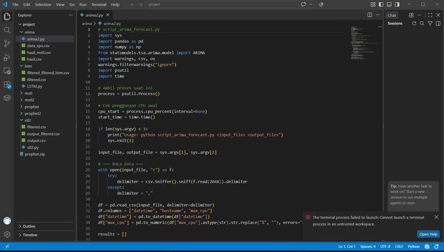
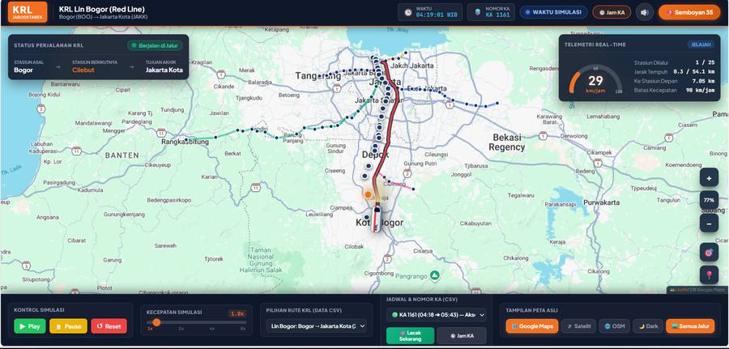
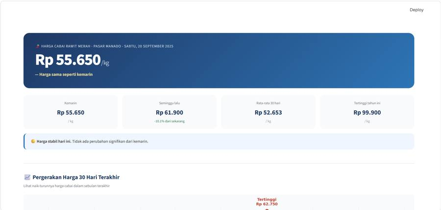
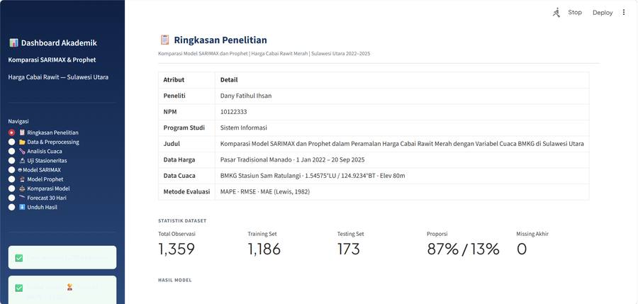
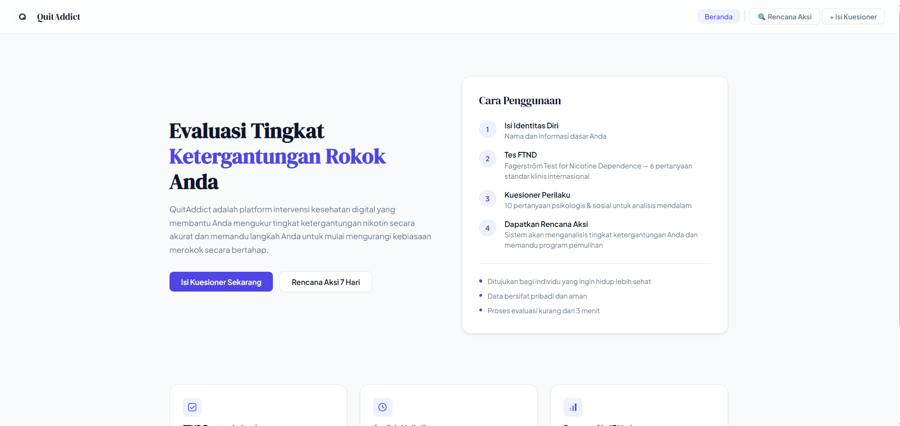

Magang di Telkomsel: kapan CPU benar-benar bermasalah?
Alarm yang berbunyi setiap kali pemakaian CPU naik itu melelahkan. Tugas saya membuat ambang batas yang ikut belajar dari pola harian, mingguan, dan bulanan, lalu memeriksa ulang setiap alarm.
Saya membandingkan MSTL, ARIMA, dan Prophet untuk memahami pola, memakai EWMA untuk ambang dinamis, lalu menguji LSTM, Holt-Winters, dan SARIMA untuk memvalidasi alert. Akurasi pemantauan MSTL di lima host berada di kisaran 81–90%. Nilai akhir magang: 90.
Pelajaran yang paling saya ingat: ambang saya terus menempel di 0,98 karena data saya berupa persen sedangkan data asli berupa pecahan. Banyak “model yang salah” ternyata “data yang salah”.

Sertifikat kompetensi Data Analyst
Uji kompetensi BNSP lewat LSP Universitas Gunadarma, berlaku tiga tahun.
Dua proyek yang saya bangun sendiri

Simulasi KRL JABODETABEK. Kereta bergerak di peta berdasarkan jadwal dan nomor KA dari CSV Lihat Demo Aplikasi
Pantauan harga cabai harian. Harga hari ini dibanding kemarin, seminggu lalu, dan rata-rata 30 hari.Peramalan harga cabai: SARIMAX atau Prophet?
Awalnya proyek ini saya rencanakan jadi skripsi. Topiknya berganti, tetapi proyeknya tetap saya teruskan karena datanya menarik dan masih banyak yang bisa dicoba.
Dua model peramalan harga cabai rawit merah di Pasar Manado dibandingkan, dengan data cuaca BMKG Stasiun Sam Ratulangi sebagai variabel tambahan. Data harian 1 Januari 2022 – 20 September 2025 (1.359 observasi), dibagi 87% latih dan 13% uji, dinilai dengan MAPE, RMSE, dan MAE.

Skripsi: QuitAddict, mengukur ketergantungan rokok
Skripsi saya pindah topik ke kesehatan digital, dan sudah saya pertahankan di sidang. QuitAddict adalah situs yang membantu orang mengukur tingkat ketergantungan nikotin lewat tes FTND (Fagerström, enam pertanyaan) dan kuesioner perilaku sepuluh pertanyaan, lalu memberi rencana aksi tujuh hari untuk mulai mengurangi kebiasaan merokok. Seluruh prosesnya kurang dari tiga menit.

Selingan: temukan lonjakannya
Garis ini pemakaian CPU. Klik lonjakan sebelum lewat. Klik di tempat yang normal dihitung alarm palsu.